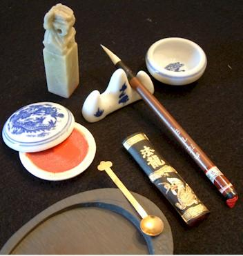
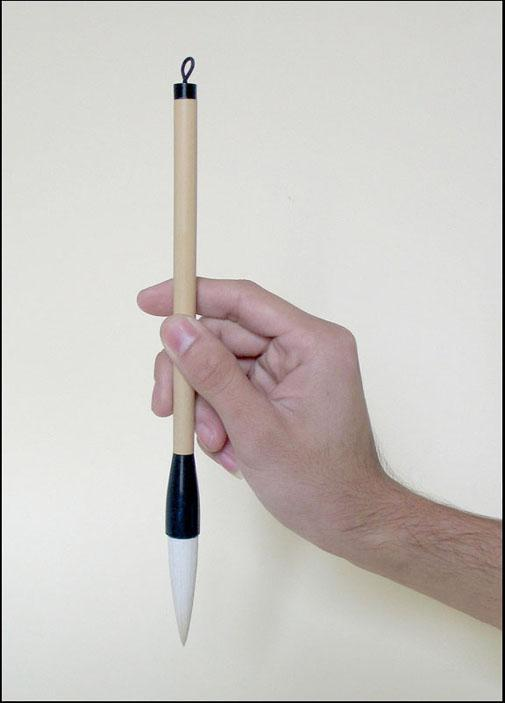
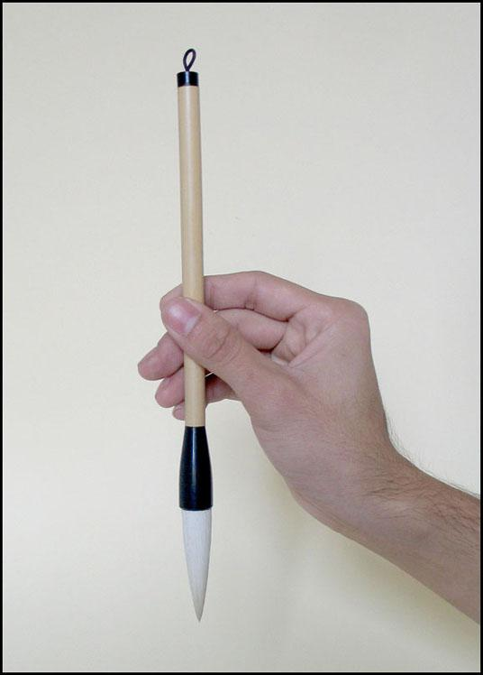
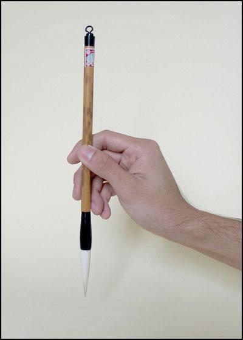
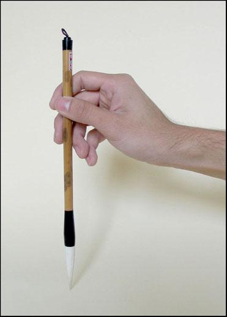

Trang chủ
Trang chủCầm bút sao cho bút vuông góc với mặt giấy, khi viết các ngón tay và cổ tay phải thoải mái không gồng cứng. Lưng thẳng, vai giữ nằm ngang và thả lỏng. Nên tập cho mình một thói quen để giấy song song với cạnh bàn và vai, không nên để tờ giấy xéo và xoay người sang để viết. Với tác phẩm có kích thước vừa phải khi chuyển bút chỉ di chuyển các ngón tay, cổ tay, khủy tay chứ không di chuyển vai và toàn thân. Tuỳ vào loại giấy, độ đặc lỏng của mực và thể chữ mà bạn chọn cho mình tốc độ viết phù hợp. Đừng quan niệm rằng viết thư pháp phải viết thật nhanh mới hay. Công phu cầm viết nằm ở chỗ tay thật vững, không run, khi tay vững thì bạn có thể viết chữ to hay chữ nhỏ chỉ với một cây bút.
Khi viết, tay nhấc lên cao không chạm mặt giấy gọi là Không Bút. Khi viết tay chạm mặt giấy thì gọi là Tì Bút.

NGŨ CHỈ CHẤP BÚT: Đây là cách cầm bút thông dụng và phổ biến nhất.
Giữ thân bút bằng ba ngón tay, ngón cái, ngón trỏ và ngón giữa. Đầu ngón tay cái áp sát vào thân bút, đầu ngón trỏ và ngón giữa áp sát vào thân bút theo phía đối diện với ngón cái. Phần móng tay của ngón áp út tựa nhẹ vào thân bút và ngón út không chạm vào thân bút mà tựa nhẹ vào ngón áp út.

Chú ý ngón áp út và ngón út không để cong quẹo hoặc chạm vào lòng bàn tay. Các ngón tay phải giữ bút chắc chắn, lòng bàn tay phải rỗng. Cổ tay phải thăng bằng và cánh tay luôn giữ ở tư thế treo. Các bạn nên nhớ rằng cầm bút cao hay thấp và cầm theo cách nào cho phù hợp còn tuỳ thuộc vào thể chữ và kích thước của tác phẩm.
CÁC CÁCH CẦM BÚT KHÁC
. Cách cầm đơn giản nhất là giữ sao cho các ngón tay nằm một bên thân bút và ngón trỏ nằm ở phía ngược lại.

Khi viết chữ với kích thước nhỏ bạn có thể tựa nhẹ cánh tay vào cạnh bàn, chống nhẹ ngón tay út vào giấy hoặc kê cổ tay lên một thanh gỗ hay mu bàn tay trái. Khi mới tập viết, có người luyện kỹ pháp không bút trước, cách này tốn nhiều thời gian và đòi hỏi công phu tập luyện cao. Nếu bạn thành thạo kỹ pháp không bút thì bạn đã dàng điều khiển bút theo các kỹ pháp khác. Ngược lại, nếu bạn luyện kỹ pháp tì bút trước thì bạn dễ làm quen và điều khiển bút nhanh hơn. Nhưng sau này bạn muốn luyện sang kỹ pháp không bút sẽ gặp nhiều trở ngại, bạn thấy không quen tay, mất kiên nhẫn và mau chán nản. Như vậy sẽ gây hạn chế rất lớn cho công việc sáng tác của bạn sau này.


Tư thế viết thư pháp:
- Ngồi viết: Tùy theo chiều cao của mỗi người và diện tích của nơi viết chữ mà bạn có thể chọn cho mình một bộ bàn ghế thích hợp và thoải mái để viết.
- Đứng viết: Tức là bạn vẫn dùng bàn để viết nhưng không dùng ghế để viết cho thật thoải mái.
_ Ngồi xếp bằng: Lúc này bạn sử dụng bàn thấp và ngồi xếp bằng dưới đất hoặc có thể ngồi trên một chiếc gối nhỏ.Tư thế này có tầm nhìn vừa phải, không quá gần như khi sử dụng ghế mà cũng không quá xa khi đứng viết.
- Bò nghiêng: Các bạn dễ thấy hình ảnh này khi xem những tranh ảnh về những cụ đồ ngày xưa, đây là tư thế tạm thời vì các cụ chỉ viết trong mấy ngày xuân ngắn ngủi, không tiện mang theo bàn ghế. Ở tư thế này nếu viết chữ đại tự thì các cụ ngồi thẳng lưng mà viết, trong trường hợp viết các câu đối thì các cụ duỗi dài người lên phía trước.
- Quỳ gối viết: Ở tư thế này thì hai gối các bạn phải chạm đất và tay trái chống thẳng, rất tiện khi viết chữ to.
- Đứng viết lên vách: Khi các bạn phải viết tác phẩm lên một tấm vách cố định thì ta dùng tư thế này. Giữ tầm mắt vừa phải và tập trung vào nội dung đang thể hiện.
* Dù bạn viết ở bất kỳ tư thế nào đi nữa thì nên giữ cơ thể thăng bằng và thoải mái. Nếu ngồi ghế thì hai bàn chân phải song song nhau và chạm vào mặt đất. Vai luôn giữ ngang và cột sống phải thẳng, nếu không dễ gây tật gù lưng và nhức mỏi cho chúng ta sau này, cũng như không thể ngồi viết lâu được. Nếu trong trường hợp vận bút có gì trở ngại, bạn nên kiểm tra lại tư thế và cách cầm bút, nếu mọi thứ ổn định và đúng cách mà đường bút vẫn chưa đạt thì bạn nên nghỉ ngơi.
Trích Thư pháp Việt lý thuyết và thực hành của nhà thư pháp Đăng Học.
 Trang chủ
Trang chủ You Tube
You Tube Facebook
Facebook Twitter
Twitter